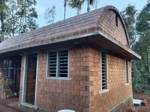
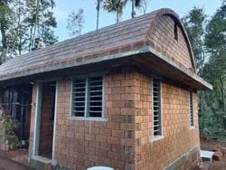

Eco-Friendly • Durable • Modern Compressed Stabilized Earth Blocks
Contact Us
Welcome to Walltech Bricks — where innovation meets sustainability in modern construction.
We are a leading manufacturer of Compressed Stabilized Earth Blocks (CSEB), dedicated to delivering eco-friendly, durable, and cost-effective building solutions that promote a greener future.
At Walltech Bricks, we believe that the strength of every structure begins with the right foundation — one that respects both nature and design. Our CSEB products are engineered using advanced technology, high-quality raw materials, and sustainable practices to ensure superior performance, thermal comfort, and aesthetic appeal.
Our mission is simple: to build a sustainable world, one block at a time.
By combining modern engineering with locally sourced natural materials, we produce earth blocks that reduce carbon emissions, minimize waste, and support energy-efficient construction — without compromising on quality or durability.
With a commitment to innovation, reliability, and environmental responsibility, Walltech Bricks partners with architects, builders, and homeowners to create buildings that are strong, beautiful, and sustainable for generations to come.
Build Green. Build Strong. Build with Walltech Bricks.
Zero firing process, low carbon footprint, sustainable manufacturing. Build without harming the planet — every Walltech block is a step toward sustainability.
High compressive strength, machine-pressed precision, long-term durability. Engineered for endurance — Walltech CSEBs are built to last.
Natural insulation, energy efficiency, and healthier living. Enjoy year-round comfort while saving energy.
Reduced plastering, faster walling, low maintenance. Economical to build, affordable to maintain.
Natural earth tones, flexible use, customizable finishes. Modern design meets natural beauty.
Eco-conscious production, innovation, and local empowerment. Build Smart. Build Green. Build with Walltech Bricks.
Our vision is to be recognized as a leader in sustainable building solutions, inspiring a global shift toward environmentally responsible construction. We aim to make Walltech Bricks synonymous with quality, innovation, and sustainability, setting new benchmarks in eco-conscious architecture. Through continuous improvement, advanced technology, and a deep respect for nature, we envision a world where every structure is built in harmony with the earth.

At Walltech Bricks, our mission is to build a sustainable future through innovation in eco-friendly construction. We are committed to manufacturing high-quality Compressed Stabilized Earth Blocks (CSEB) that promote green building practices, reduce environmental impact, and provide durable, energy-efficient alternatives to conventional materials. By combining technology, craftsmanship, and environmental responsibility, we strive to empower builders, architects, and communities to create lasting, sustainable spaces for generations to come.
Quality is the foundation of everything we build at Walltech Bricks. We are dedicated to producing consistent, high-performance CSEB products that meet the highest standards of strength, durability, and sustainability.
Dry: 3–7.5 MPa
Wet: 3–4 MPa
8–12%
1700–2200 kg/m³
Good insulation properties
10.7x less than fired bricks
12.5x less than fired bricks
28 days minimum
Good, due to mineral composition


Compressed Stabilized Earth Blocks (CSEBs) are eco-friendly building materials made by compressing a mixture of soil, stabilizer (like cement), and water under high pressure.
CSEBs offer advantages such as reduced carbon emissions, lower energy consumption, and enhanced thermal insulation properties.
An optimal soil mix consists of approximately 15% gravel, 50% coarse sand, 15% silt, and 20% clay.
CSEB blocks should be cured for at least four weeks after manufacturing to achieve optimal strength.
Yes, with proper stabilization and curing, CSEBs can be used in various climatic conditions.
 
